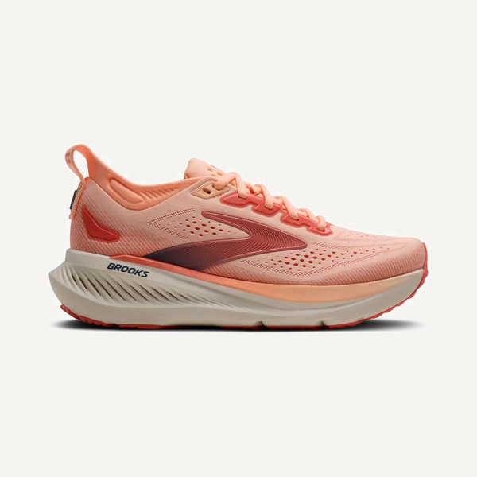
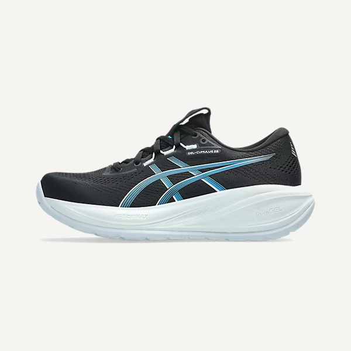
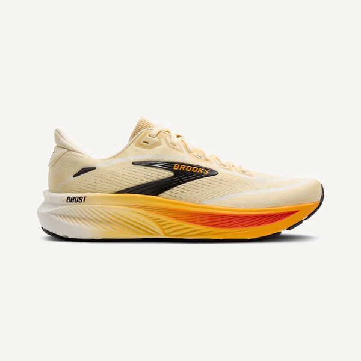
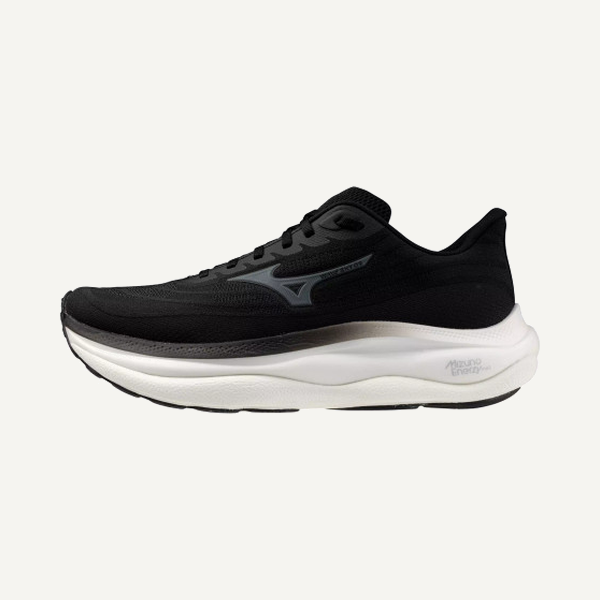
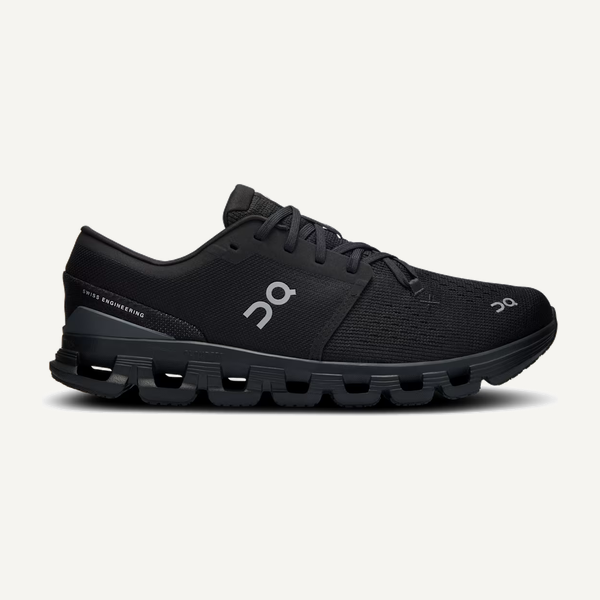
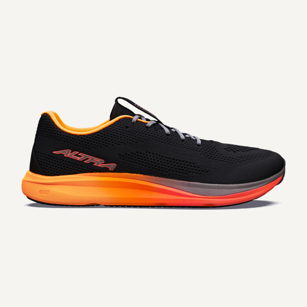

Saucony Echelon 10
Firmer & springyA supportive medium-cushion shoe great for walking!
The Saucony Echelon is a great high-volume walking shoe made to keep your feet from hurting after a long day exploring new cities, walking the dogs, or just enjoying some sun. This shoe has both a stable base and more stable cushion to keep anything from moving around any more than you'd naturally walk.
Pro tip: Fits true to size, but a slightly wider fit overall.
Around $155
A high-cushion shoe built for the long days on your feet.
The Bondi has a bouncier, more supportive cushion compared to a lot of the other soft and plushy high-cushion shoes. This makes it a great option for somebody who finds their ankles or feet sore after a long day in a plushy, soft shoe. The Bondi is a go-to for long walks, or for a job that requires a lot of standing.
Pro tip: Fits true to size.
Around $175
Asics Gel-Nimbus 28
SoftestA soft high-cushion shoe great for long runs, frequent walks, or long days on your feet.
The Gel-Nimbus uses Asics gel to make a super high-cushion spongy shoe that is great for keeping your feet comfortable. It's a great pick if you are searching for a shoe that is comfortable after hour ten at work, after mile twelve of your long run, or on your third walk of the day.
Pro tip: Fits true to size.
Around $170
A plush high-cushion shoe great for an easy long run, frequent walks, or a long day on your feet.
The 1080 is a soft high-cushion shoe great for the next time you're on your feet for what feels like forever. It's a great option for somebody with a slightly wider foot and needs a long run shoe, a daily walking shoe, or a shoe for long days at work.
Pro tip: Fits true to size, slightly wider than competitors.
Around $170

Brooks Glycerin 23A bouncy high-cushion shoe great for long walks, long days on your feet, or a long run.
The Glycerin is a great option for someone looking for a higher-cushion shoe that has a bouncier, springy feel vs a plushy soft feel. It has a slightly roomier toe box, and has a secure heel to ensure no slipping. A great shoe for your long runs, long walks with the dogs, or a long day on your feet.
Pro tip: True to size, with a slightly wider toe box and a narrower heel.
Around $175

Asics Gel-Cumulus 28A medium-cushion shoe great for daily miles or everyday activities.
The Gel-Cumulus is great because it has plenty of cushion for your everyday running, yet it sits closer to the ground than many other shoes. This lets you be closer to the ground with no loss of cushion, all thanks to the gel Asics uses in their shoes. The Cumulus is a great option for daily training, walking, or just wearing to the grocery store.
Pro tip: Fits true to size.
Around $145

Brooks Ghost 18From everyday wear to training for your first race, the Ghost handles it all!
The Ghost is the shoe for somebody that wants a bouncy cushion that isn't too plushy yet will keep the feet happy for a long walk, or a couple miles on the greenway. Overall, a smooth, predictable shoe that works for many everyday or running applications.
Pro tip: True to size, the heel is slightly more secure than some of its competitors.
Around $150

Mizuno Wave Sky 9A high-cushion shoe great for walking or standing all day.
The Wave Sky is a soft option that is great for somebody looking for a comfortable shoe after a long day. This high-cushion option leans on the plushier side of foams and is a relaxing fit perfect for a walking or work shoe.
Pro tip: Fits true to size.
Around $180

On Cloud X 4A low-cushion shoe great for the gym or everyday use.
The Cloud X is a great shoe if you are looking for something close to the ground and not too soft. It's an awesome shoe for the gym as the smaller sole keeps you more stable, and it's also stylish for everyday wear!
Pro tip: Runs true to size.
Around $160
A low-cushion shoe mostly for your aura points.
The Cloud 6 is a laceless shoe that's awesome to slip on and run to the store in. However, there simply isn't enough cushion or support to run or walk long distances in them. For that reason we recommend them only as a stylish non-running option.
Pro tip: Runs a little short.
Around $160

Altra Escalante 5A low-cushion zero drop shoe great for lifting or daily use.
The Escalante provides a stable, close-to-the-ground feel great for somebody wanting to ditch the high stack height trend. This shoe is great for lifting because of its zero drop design, making a flat bottom for a stable base.
Pro tip: True to size, with a wide toebox and a more secure heel.
Around $140